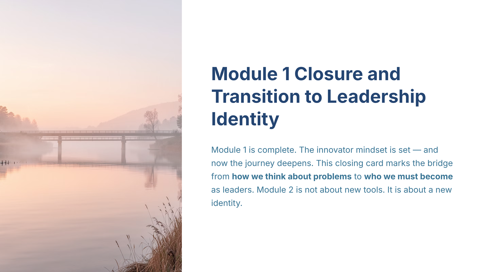

#1
Module 1 Closure and Transition to Leadership Identity
slide-01
creativevariant Acluster headCoherence pendingcard 1orientation landscape
Approved slide

[+]Asset status: present | Dimensions: 2400×1350
Motion review: Motion: static | n/a
Cluster c-u01Position establishInterstitial type n/aIsolation target n/aDevelop type n/aArc From completion of Module 1 mindset work to readiness for Module 2 leadership identity through a forward-looking synthesis and transition.
Script
Status: Attached
72 words@150 WPM 28.8shead narrationtiming n/adensity n/aposition establishintent n/aintent serves master
Congratulations—your innovator mindset is now set, and the journey deepens. The main message is simple but consequential: we are crossing from how we think about problems to who we must become to lead change. Treat this as a commitment to identity, not a hunt for more tools. As a closing seam, carry forward the discipline you’ve built here and get ready to shape your leadership stance in the next module.
Script notes
Module 1 Closure and Transition to Leadership Identity — Understand the source-grounded summary of Module 1 and the bridge into Module 2, including the shift from innovator mindset to leadership identity.
Voice direction
Voice direction: using global/default settings
Evidence & provenance
- Source ref
- n/a
- File path
- gary/A_slide-01.png
- Created
- 2026-07-12T03:36:25.204055+00:00
- Literal-visual source
- n/a
- Matched segments
- seg-01
- Narration refs
- n/a
- Visual refs
- 0
- Visual mode
- n/a
- Visual file
- n/a
- Motion type
- static
- Motion status
- n/a
- Motion source
- n/a
- Motion duration
- n/a
- Runtime target (s)
- n/a
- Motion asset
- n/a
- Timing role
- n/a
- Content density
- n/a
- Visual detail load
- n/a
- Bridge type
- intro
- Behavioral intent
- n/a
- Duration rationale
- n/a
- Cluster position
- establish
- Interstitial type
- n/a
- Isolation target
- n/a
- Quality
- Vera None | Quinn None
Findings
No findings attached.